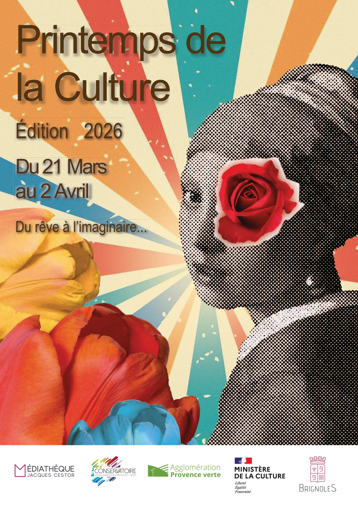

projet de création d'affiche pour l'événement Printemps de la culture 2026.

Voici l'affiche créée pour l'événement fictif Printemps de la culture 2026. Le design met en avant les éléments caractéristiques de l'événement, avec une palette de couleurs rétro et la jeune fille à la perle de Vermer, icone de l'histoire de l'art.
Avec de projet, j'ai pu concevoir un support de communication grand format efficace ainsi qu'une direction artistique cohérente pour une déclinaison d'un support alternatif : une brochure.